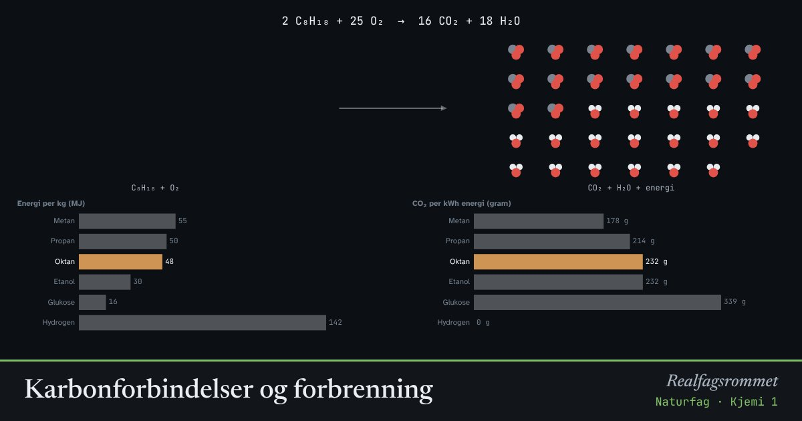

Karbonforbindelser og forbrenning
Når karbonforbindelser brenner, reagerer de med oksygen. Energien som var lagret i bindingene frigjøres, og karbonatomene blir til CO₂. Det samme skjer i cellene når vi forbrenner glukose.
Start animasjonen
Formler
Om animasjonen
Ved fullstendig forbrenning blir alt karbon til CO₂ og alt hydrogen til vann. Atomene blir bare stokket om: Det er like mange av hvert slag på begge sider av pila.
Med for lite oksygen blir det karbonmonoksid (CO) i stedet. CO er en giftig gass uten lukt som hindrer blodet i å frakte oksygen. Derfor er det farlig å fyre med dårlig trekk.
Diagrammene sammenligner brensler. Hydrogen gir mest energi per kilo og ingen CO₂, men må lages med energi fra et annet sted. Naturgass gir minst CO₂ per kWh av de fossile brenslene.
Karbon er grunnlaget for livet: Planter lager glukose fra CO₂ i fotosyntesen, og vi frigjør energien igjen i celleåndingen. Karbonet i etanol og ved kommer fra planter som nylig tok det fra lufta. Karbonet i fossilt brensel har vært lagret i millioner av år.
Prøv dette
- Balanser forbrenningen av propan selv. Sjekk med animasjonen.
- Hvor mye CO₂ blir det når 1 kg bensin brenner? Hvorfor veier CO₂-en mer enn bensinen?
- Hvorfor er det farlig å brenne gass eller ved med for lite lufttilførsel?
- Sammenlign CO₂ per kWh for metan og oktan. Hva betyr det for klimaet?
Kompetansemål
- Naturfag: Karbonforbindelser og karbonets betydning for livet
Mer om organisk kjemi og polymerer
- Organiske stoffer, navn og reaksjonstyper
- Karboksylsyrer og estere: fra sur lukt til fruktig duft
- Polymerer: addisjon og kondensasjon